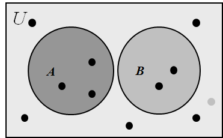
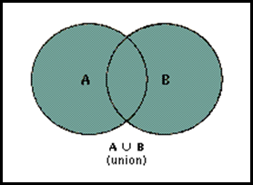
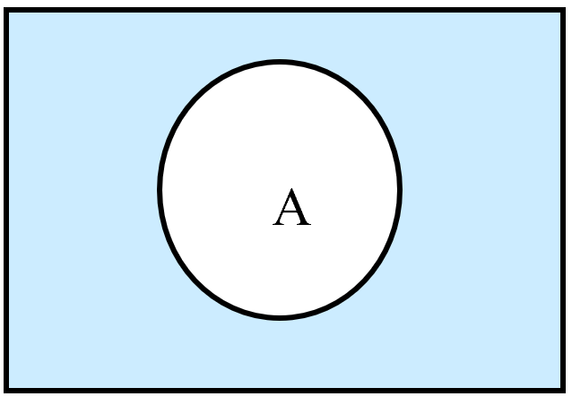
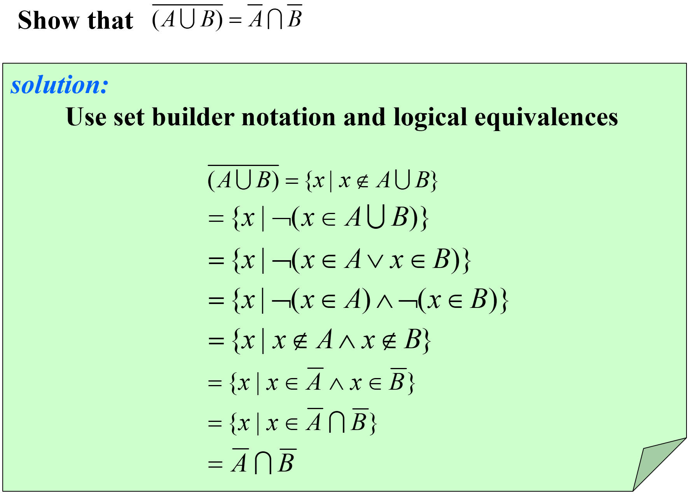
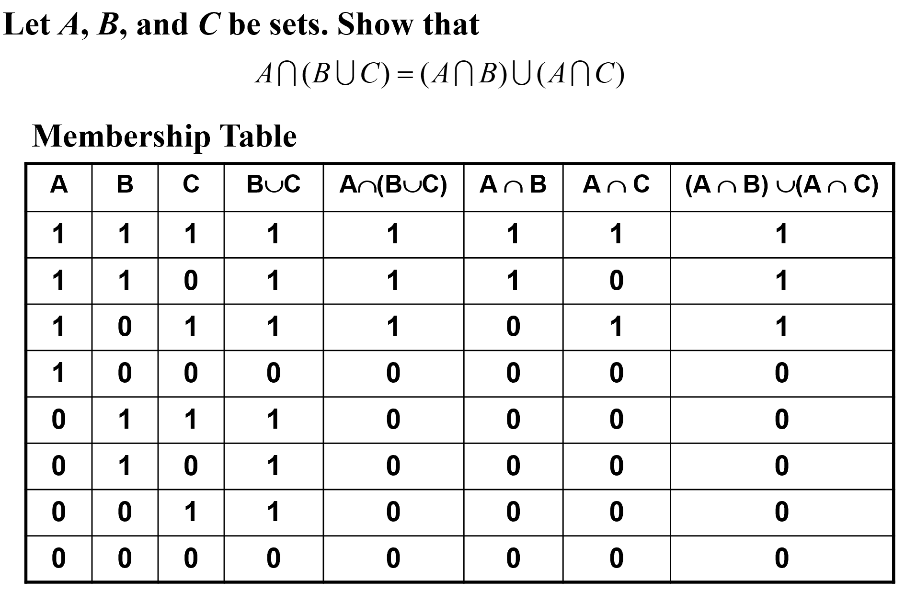

Part 01 Set
Covering2.1 ~ 2.2
1. Set 集合
1.1. Basic 基本属性
1.1.1. Definition 定义
A set is an unordered collection of objects.
集合是对象的一个无序聚集。
Note:
- The Order of elements does not matter {1, 2, 3} = {3, 2, 1}
- Repetition of elements does not matter {1, 1, 2, 3, 3} = {1, 2, 3}
The objects in a set are called the elements（元素）, or members（成员）, of the set.
A set is said to contain（包含） its elements.
Note:
Uppercase letters are usually used to denote sets, and lowercase letters are usually used to denote elements of sets.
a ∈ A: a is a member (an element) of the set A
a ∉ A: a is not an element of the set A
1.1.2. Description 描述方法
Roster Method 花名册法
listing all its members between braces
e.g. S = {a, b, c, d}
Brace Notation with Ellipses 省略号记法
Sometimes the roster method is used to describe a set without listing all its members. Some members of the set are listed, and then ellipses (. . .) are used when the general pattern of the elements is obvious.
e.g. The set S of positive integers less than 100 can be denoted by S = {1, 2, 3, . . . , 99 }
Set Builder 构造器
We characterize all those elements in the set by stating the property or properties they must have to be members.
e.g. {x | x is an odd positive integer less than 10}
Truth Sets 真值集
Given a predicate P, and a domain D, we define the truth set of P to be the set of elements x in D for which P(x) is true.
The truth set of P(x) is denoted by {x ∈ D | P(x)}.
1.1.3. Venn Diagrams 文氏图

- In Venn diagrams, the universal set U is represented by a rectangle.
- Inside this rectangle, circles or other geometrical figures are used to represent sets.
- Points are used to represent the particular elements of the set.
1.2. Property 性质
1.2.1. The Relations Between Two Sets 集合间的关系
Subset 子集
For any set A
Equal 相等
To show that two sets A and B are equal, show that A ⊆ B and B ⊆ A.
Proper subset 真子集
1.2.2. The Size of a Set 集合的大小
Let S be a set. If there are exactly n distinct elements in S where n is a nonnegative integer, we say that S is a finite（有限的） set and that n is the cardinality（基数） of S.
Notation: |S| -> the cardinality of S
e.g. Let A be the set of odd positive integers less than 10. Then |A| = 5.
|∅| = 0
A set is said to be infinite（无限的） if it is not finite
e.g. The set of positive integers is infinite
1.2.3. Power Set 幂集
Given a set S, the power set of S is the set of all subsets of the set S.
Notation: P(S) -> the power set of S
Note:
- |S|=n implies |P(S)| =
- S is finite and so is P(S)
e.g.
What is the power set of the empty set? What is the power set of the set {∅}?
The empty set has exactly one subset, namely, itself. Consequently, P(∅) = {∅}. The set {∅} has exactly two subsets, namely, ∅ and the set {∅} itself. Therefore, P({∅}) = {∅, {∅}}.
A good way to check is to make sure |P(S)| =
1.2.4. Cartesian Products 笛卡尔积
Tuple 元组
The ordered n-tuple（有序n元组） (a1, a2, . . . , an) is the ordered collection that has a1 as its first element, a2 as its second element, . . . , and an as its n-th element.
In particular, ordered 2-tuples are called ordered pairs（序偶）
If , then
The Cartesian product of A and B, denoted by A × B, is the set of all ordered pairs (a, b), where a ∈ A and b ∈ B.
Note:
If |A|=m, |B|=n, then |A×B|=|B×A|=mn
A×B≠B×A
A×∅ = ∅×A = ∅
1.3. Set Operations 集合运算
1.3.1. Intersection 交集

Two sets are called disjoint if their intersection is the empty set, namely
Generalized Intersections 拓展的交集
1.3.2. Union 并集

The cardinality of the union of two finite sets:
Generalized Unions 拓展的并集
1.3.3. Difference 差集

1.3.4. Complement 补集
(U is the universal set)

Note:
1.3.5. Symmetric Difference 对称差分
1.4. Set Identities 集合恒等式
| Identity 恒等式 | Name 名称 |
|---|---|
| Identity laws 恒等率 | |
| Domination laws 支配率 | |
| Idempotent laws 幂等律 | |
| Complementation law 补率 | |
| Commutative laws 交换律 | |
| Associative laws 结合律 | |
| Distributive laws 分配律 | |
| De Morgan’s laws 德·摩根率 | |
| Absorption laws 吸收率 | |
| Complement laws 互补率 |
1.4.1. Ways to Prove Set Identities 集合恒等式的证明方法
I. Show that A ⊆ B and that B ⊆ A
New and important

II. Use logical equivalences to prove equivalent set definitions
Easy but tedious

III. Use a membership table
Like truth tables

IV. Use previously proven identities
Like ≡

1.5. Computer Representation of Set 集合的计算机表示
Using bit strings to represent sets
- Specify an arbitrary ordering of the elements of U, for instance
- Represent a subset A of U with the bit string of length n, where the i-th bit is 1 if belongs to A and is 0 if does not belong to A.
- Thus, Union -> bitwise OR Intersection -> bitwise AND
Example:
Let U ={1, 2, 3, 4, 5,6,7,8,9}, A={1, 2, 3, 4, 5}, B= (1, 3, 5, 7, 9).
The bit string for the set A: 11 1110 000
The bit string for the set B: 10 1010 101